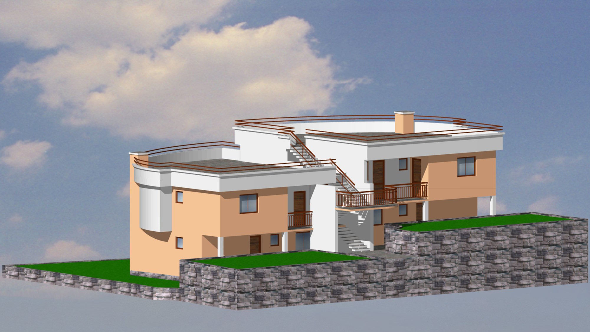
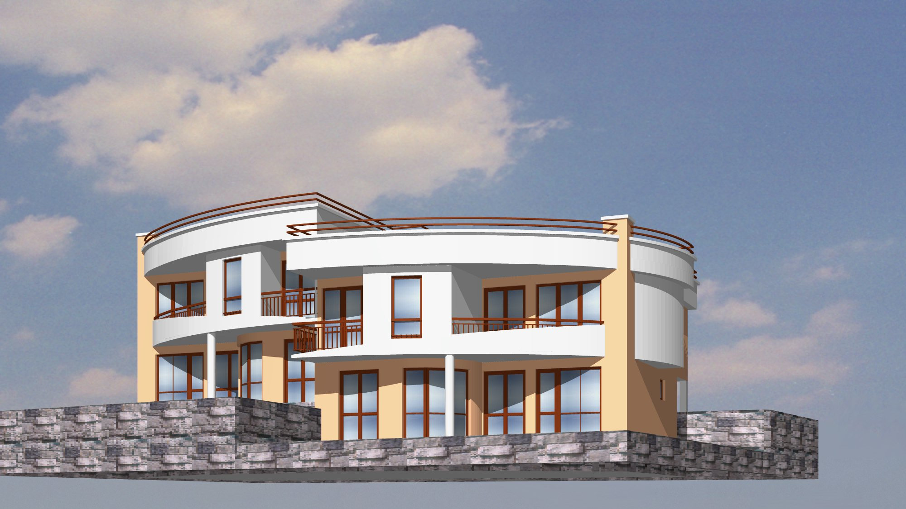
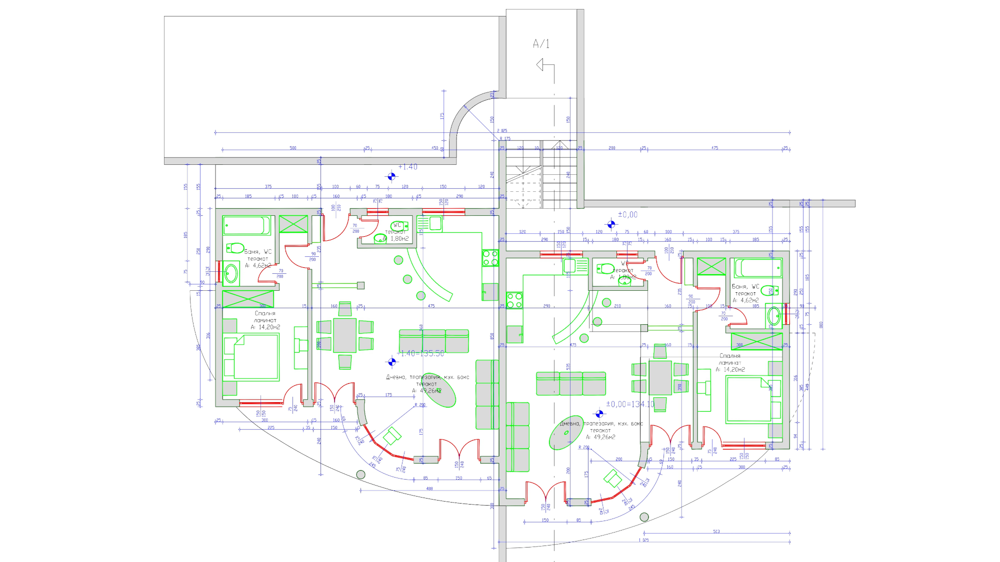

<div class="modal-content">
	<div class="modal-header">
		<h5 class="modal-title col-xs-10">Двуфамилна жилищна сграда</h5>
		<button type="button" class="close" data-dismiss="modal" aria-label="Close">
			<span aria-hidden="true">&times;</span>
		</button>
	</div>
	<div class="modal-body">
		<div class="info">
			<div class="row">
				<div class="col-xs-6"><i class="fa fa-building-o"></i> Жилищна Сграда</div>
				<div class="col-xs-6"><i class="fa fa-tasks"></i> 2 етажа</div>
			</div>
			<div class="row">
				<div class="col-xs-6"><i class="fa fa-map-pin"></i> гр. Балчик</div>
				<div class="col-xs-6"><i class="fa fa-object-ungroup"></i> 160 кв. м</div>
			</div>
		</div>
		<div class="slider-project">
			<div class="item"></div>
			<div class="item"></div>
			<div class="item"></div>
		</div>		
	</div>
</div>